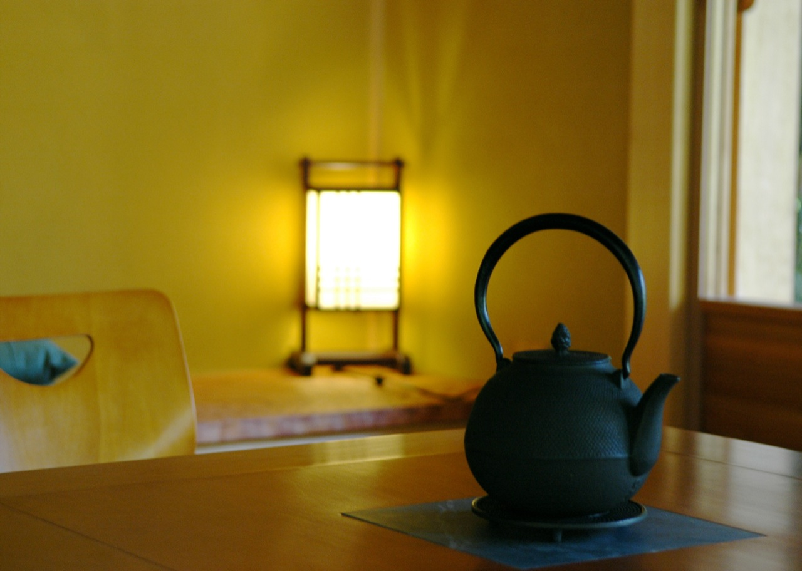
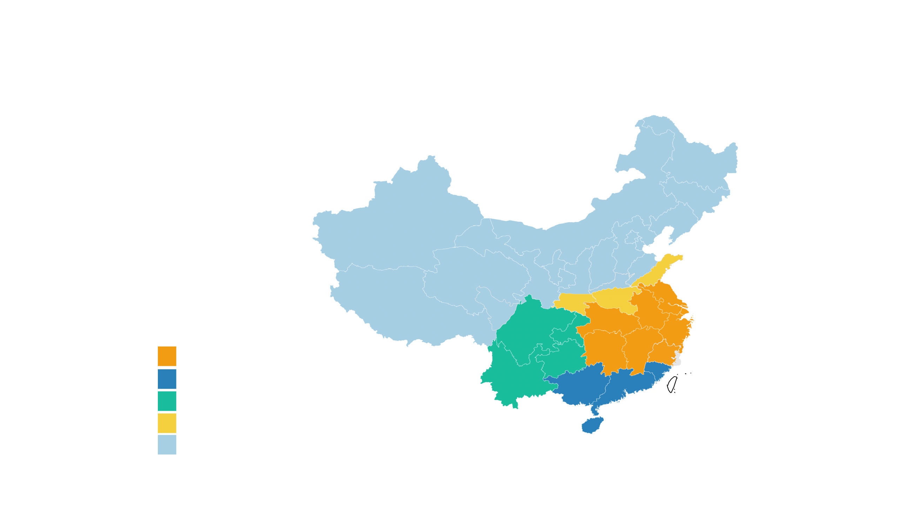
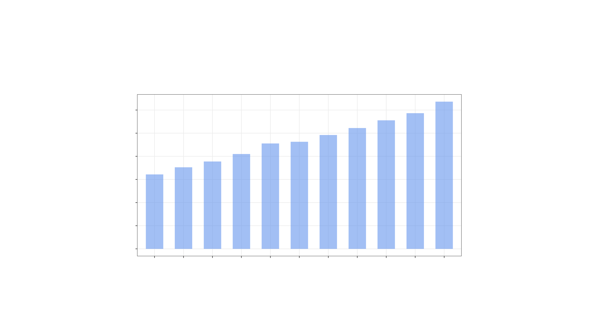
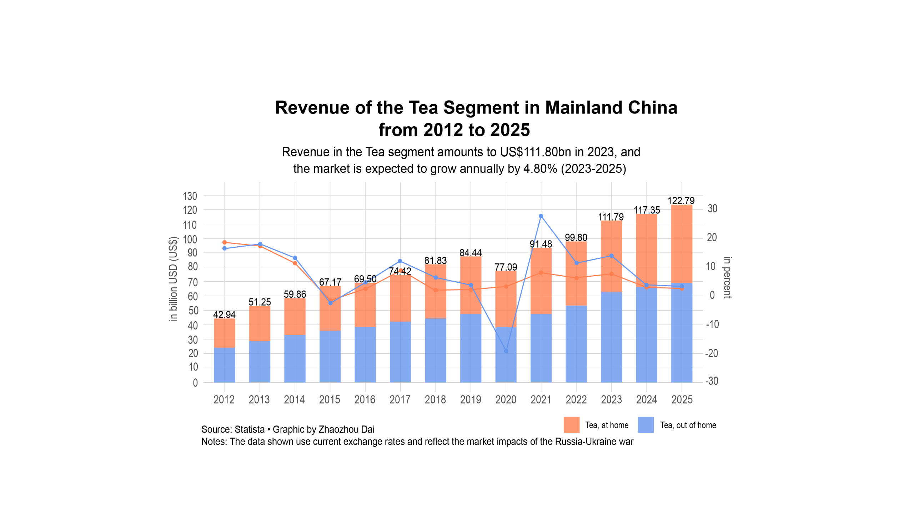

<!doctype html>
<html>
    <head>
        <meta charset="UTF-8">
        <meta name="viewport" content="width=device-width, initial-scale=1">
        <link rel="stylesheet" href="stylesheet.css">
        <link rel="icon" type="image/x-icon" href="images/tea-icon.png">
        <title>Chinese Tea Production and Export Volume</title>
        <style>
            @import url('https://fonts.googleapis.com/css2?family=Fira+Sans:wght@400;700&family=Mako&family=Marcellus&family=Open+Sans:wght@500&family=Source+Sans+Pro:wght@400;700&display=swap');
        </style>
    </head>
</html>
<body>
    <div class='title-container'>
        <p class="tag">TEA, CHINA</p>
        <h1>China Retains its Position as the Top Tea Producer and Exporter Worldwide</h1>
        <p class="byline">Zhaozhou Dai</p>
        <p class="date">March 9, 2023</p>
    </div>

    <center>
    
    <div class='title-container'>
    <i><p class="byline">"<a href="https://www.flickr.com/photos/80742119@N00/1355675802" target="new">Tea House</a>" by <a href="https://www.flickr.com/photos/80742119@N00" target="new">St0rmz</a> is licensed under <a href="https://creativecommons.org/licenses/by-sa/2.0/?ref=openverse" target="new">CC BY-SA 2.0</a>.</p></i>
    </div>
    </center>


    <div class="text-container">
		<p>Tea is among the most widely consumed beverages worldwide, with a global consumption of over<a href="https://www.statista.com/statistics/940102/global-tea-consumption/" target="new"> 6.6 billion kilograms</a> in 2021, with almost one-third originating from China. China takes the lead as the world's biggest producer, exporter and consumer of tea, <a href="https://www.statista.com/statistics/264188/production-of-tea-by-main-producing-countries-since-2006/" target="new">generating 2.74 million metric tons</a> in 2020, which amounts to approximately 45% of the global tea production.</p>
        <p>Tea has its roots in China, where it was first consumed for medicinal reasons. The earliest trustworthy documentation of tea drinking in China can be traced back to the 3rd century AD. Over the centuries, tea has been recognized as the country's quintessential beverage, playing a vital part in its culture, society and even religion.</p>
        <p>Since the 1990s, Mainland China has followed a comprehensive production policy to consolidate previous generations' expertise, taking into account natural, economic and social factors. As part of this strategy, vast tea-growing regions were classified into one, two and three grades. The government designated the top-grade tea regions for regional macro-management, which comprised four significant areas: the <span style="background: #F29C13; color: white">South Yangtze Tea District</span>, the <span style="background: #2980B9; color: white">Southern Tea District</span>, the <span style="background: #1ABC9D; color: white">Southwestern Tea District</span> and the <span style="background: #F4D03F; color: white">North Yangtze Tea District</span>.</p>

    </div>
    <div class="chart">
        <div aria-hidden="true">

<!-- Generated by ai2html v0.115.1 - 2023-03-17 19:17 -->
<!-- ai file: Distribution_of_Tea.ai -->
<style media="screen,print">
	#g-Distribution_of_Tea-box ,
	#g-Distribution_of_Tea-box .g-artboard {
		margin:0 auto;
	}
	#g-Distribution_of_Tea-box p {
		margin:0;
	}
	#g-Distribution_of_Tea-box .g-aiAbs {
		position:absolute;
	}
	#g-Distribution_of_Tea-box .g-aiImg {
		position:absolute;
		top:0;
		display:block;
		width:100% !important;
	}
	#g-Distribution_of_Tea-box .g-aiSymbol {
		position: absolute;
		box-sizing: border-box;
	}
	#g-Distribution_of_Tea-box .g-aiPointText p { white-space: nowrap; }
	#g-Distribution_of_Tea-Artboard_1 {
		position:relative;
		overflow:hidden;
	}
	#g-Distribution_of_Tea-Artboard_1 p {
		font-family:arial,helvetica,sans-serif;
		line-height:17px;
		height:auto;
		opacity:1;
		letter-spacing:0em;
		font-size:14px;
		text-align:left;
		color:rgb(0,0,0);
		text-transform:none;
		padding-bottom:0;
		padding-top:0;
		mix-blend-mode:normal;
		font-style:normal;
		position:static;
	}
	#g-Distribution_of_Tea-Artboard_1 .g-pstyle0 {
		font-weight:bold;
		line-height:32px;
		height:32px;
		font-size:27px;
		text-align:center;
		color:rgb(81,90,90);
	}
	#g-Distribution_of_Tea-Artboard_1 .g-pstyle1 {
		line-height:10px;
		height:10px;
		font-size:8px;
		text-align:center;
	}
	#g-Distribution_of_Tea-Artboard_1 .g-pstyle2 {
		line-height:11px;
		height:11px;
		font-size:9px;
		text-align:center;
	}
	#g-Distribution_of_Tea-Artboard_1 .g-pstyle3 {
		line-height:8px;
		height:8px;
		font-size:6px;
		text-align:center;
	}
	#g-Distribution_of_Tea-Artboard_1 .g-pstyle4 {
		height:17px;
	}
	#g-Distribution_of_Tea-Artboard_1 .g-pstyle5 {
		line-height:12px;
		height:12px;
		font-size:10px;
		text-align:center;
	}
	#g-Distribution_of_Tea-Artboard_1 .g-pstyle6 {
		line-height:18px;
		height:18px;
		font-size:15px;
	}
	#g-Distribution_of_Tea-Artboard_1 .g-pstyle7 {
		line-height:8px;
		height:8px;
		font-size:7px;
		text-align:center;
	}

</style>

<div id="g-Distribution_of_Tea-box" class="ai2html">

	<!-- Artboard: Artboard_1 -->
	<div id="g-Distribution_of_Tea-Artboard_1" class="g-artboard" style="max-width: 1280px;max-height: 720px" data-aspect-ratio="1.778" data-min-width="0">
<div style="padding: 0 0 56.25% 0;"></div>
		
		<div id="g-ai0-1" class="g-Layer_1 g-aiAbs g-aiPointText" style="top:16.5874%;margin-top:-35.4px;left:49.1502%;margin-left:-283.5px;width:567px;">
			<p class="g-pstyle0">The Four Major Tea Districts in Mainland China </p>
			<p class="g-pstyle0">with Their Distribution of Provinces</p>
		</div>
		<div id="g-ai0-2" class="g-Layer_1 g-aiAbs g-aiPointText" style="transform: matrix(0.9997,0.0224,-0.0244,0.9997,0,0);transform-origin: 50% 58.7060023805475%;-webkit-transform: matrix(0.9997,0.0224,-0.0244,0.9997,0,0);-webkit-transform-origin: 50% 58.7060023805475%;-ms-transform: matrix(0.9997,0.0224,-0.0244,0.9997,0,0);-ms-transform-origin: 50% 58.7060023805475%;top:58.2977%;margin-top:-5.7px;left:73.9915%;margin-left:-22.5px;width:45px;">
			<p class="g-pstyle1">Jiangsu</p>
		</div>
		<div id="g-ai0-3" class="g-Layer_1 g-aiAbs g-aiPointText" style="transform: matrix(0.9997,0.0224,-0.0244,0.9997,0,0);transform-origin: 50% 57.5773272162202%;-webkit-transform: matrix(0.9997,0.0224,-0.0244,0.9997,0,0);-webkit-transform-origin: 50% 57.5773272162202%;-ms-transform: matrix(0.9997,0.0224,-0.0244,0.9997,0,0);-ms-transform-origin: 50% 57.5773272162202%;top:59.2498%;margin-top:-6.6px;left:68.5114%;margin-left:-25px;width:50px;">
			<p class="g-pstyle2">Henen</p>
		</div>
		<div id="g-ai0-4" class="g-Layer_1 g-aiAbs g-aiPointText" style="transform: matrix(0.9997,0.0224,-0.0244,0.9997,0,0);transform-origin: 50% 57.5773272162202%;-webkit-transform: matrix(0.9997,0.0224,-0.0244,0.9997,0,0);-webkit-transform-origin: 50% 57.5773272162202%;-ms-transform: matrix(0.9997,0.0224,-0.0244,0.9997,0,0);-ms-transform-origin: 50% 57.5773272162202%;top:62.3054%;margin-top:-6.6px;left:72.3872%;margin-left:-23.5px;width:47px;">
			<p class="g-pstyle2">Anhui</p>
		</div>
		<div id="g-ai0-5" class="g-Layer_1 g-aiAbs g-aiPointText" style="transform: matrix(0.9997,0.0224,-0.0244,0.9997,0,0);transform-origin: 50% 57.5773272162202%;-webkit-transform: matrix(0.9997,0.0224,-0.0244,0.9997,0,0);-webkit-transform-origin: 50% 57.5773272162202%;-ms-transform: matrix(0.9997,0.0224,-0.0244,0.9997,0,0);-ms-transform-origin: 50% 57.5773272162202%;top:63.2776%;margin-top:-6.6px;left:67.8535%;margin-left:-23.5px;width:47px;">
			<p class="g-pstyle2">Hubei</p>
		</div>
		<div id="g-ai0-6" class="g-Layer_1 g-aiAbs g-aiPointText" style="transform: matrix(0.9997,0.0224,-0.0244,0.9997,0,0);transform-origin: 50% 57.5773272162202%;-webkit-transform: matrix(0.9997,0.0224,-0.0244,0.9997,0,0);-webkit-transform-origin: 50% 57.5773272162202%;-ms-transform: matrix(0.9997,0.0224,-0.0244,0.9997,0,0);-ms-transform-origin: 50% 57.5773272162202%;top:64.5276%;margin-top:-6.6px;left:59.224%;margin-left:-28.5px;width:57px;">
			<p class="g-pstyle2">Sichuan</p>
		</div>
		<div id="g-ai0-7" class="g-Layer_1 g-aiAbs g-aiPointText" style="transform: matrix(0.9997,0.0224,-0.0244,0.9997,0,0);transform-origin: 50% 58.7060023805475%;-webkit-transform: matrix(0.9997,0.0224,-0.0244,0.9997,0,0);-webkit-transform-origin: 50% 58.7060023805475%;-ms-transform: matrix(0.9997,0.0224,-0.0244,0.9997,0,0);-ms-transform-origin: 50% 58.7060023805475%;top:65.381%;margin-top:-5.7px;left:75.1666%;margin-left:-23px;width:46px;">
			<p class="g-pstyle1">Zhejiang</p>
		</div>
		<div id="g-ai0-8" class="g-Layer_1 g-aiAbs g-aiPointText" style="transform: matrix(0.9997,0.0224,-0.0244,0.9997,0,0);transform-origin: 50% 60.4276985743381%;-webkit-transform: matrix(0.9997,0.0224,-0.0244,0.9997,0,0);-webkit-transform-origin: 50% 60.4276985743381%;-ms-transform: matrix(0.9997,0.0224,-0.0244,0.9997,0,0);-ms-transform-origin: 50% 60.4276985743381%;top:66.2215%;margin-top:-4.8px;left:62.7728%;margin-left:-23.5px;width:47px;">
			<p class="g-pstyle3">Chongqing</p>
		</div>
		<div id="g-ai0-9" class="g-Layer_1 g-aiAbs g-aiPointText" style="transform: matrix(0.9997,0.0224,-0.0244,0.9997,0,0);transform-origin: 50% 57.5767665556789%;-webkit-transform: matrix(0.9997,0.0224,-0.0244,0.9997,0,0);-webkit-transform-origin: 50% 57.5767665556789%;-ms-transform: matrix(0.9997,0.0224,-0.0244,0.9997,0,0);-ms-transform-origin: 50% 57.5767665556789%;top:68.9721%;margin-top:-6.6px;left:71.1578%;margin-left:-26px;width:52px;">
			<p class="g-pstyle2">Jiangxi</p>
		</div>
		<div id="g-ai0-10" class="g-Layer_1 g-aiAbs g-aiPointText" style="transform: matrix(0.9997,0.0224,-0.0244,0.9997,0,0);transform-origin: 50% 57.5767665556789%;-webkit-transform: matrix(0.9997,0.0224,-0.0244,0.9997,0,0);-webkit-transform-origin: 50% 57.5767665556789%;-ms-transform: matrix(0.9997,0.0224,-0.0244,0.9997,0,0);-ms-transform-origin: 50% 57.5767665556789%;top:69.2499%;margin-top:-6.6px;left:67.2366%;margin-left:-25px;width:50px;">
			<p class="g-pstyle2">Hunan</p>
		</div>
		<div id="g-ai0-11" class="g-Layer_1 g-aiAbs g-aiPointText" style="top:70.6727%;margin-top:-9.8px;left:19.9446%;width:193px;">
			<p class="g-pstyle4">The South Yangtze Tea District</p>
		</div>
		<div id="g-ai0-12" class="g-Layer_1 g-aiAbs g-aiPointText" style="transform: matrix(0.6559,-0.7548,0.7755,0.6314,0,0);transform-origin: 50% 57.4521504985081%;-webkit-transform: matrix(0.6559,-0.7548,0.7755,0.6314,0,0);-webkit-transform-origin: 50% 57.4521504985081%;-ms-transform: matrix(0.6559,-0.7548,0.7755,0.6314,0,0);-ms-transform-origin: 50% 57.4521504985081%;top:71.7652%;margin-top:-6.7px;left:73.4998%;margin-left:-24px;width:48px;">
			<p class="g-pstyle5">Fujian</p>
		</div>
		<div id="g-ai0-13" class="g-Layer_1 g-aiAbs g-aiPointText" style="transform: matrix(0.9997,0.0224,-0.0244,0.9997,0,0);transform-origin: 50% 57.5767665556789%;-webkit-transform: matrix(0.9997,0.0224,-0.0244,0.9997,0,0);-webkit-transform-origin: 50% 57.5767665556789%;-ms-transform: matrix(0.9997,0.0224,-0.0244,0.9997,0,0);-ms-transform-origin: 50% 57.5767665556789%;top:71.3332%;margin-top:-6.6px;left:63.0022%;margin-left:-29px;width:58px;">
			<p class="g-pstyle2">Guizhou</p>
		</div>
		<div id="g-ai0-14" class="g-Layer_1 g-aiAbs g-aiPointText" style="top:75.2551%;margin-top:-9.8px;left:19.9475%;width:163px;">
			<p class="g-pstyle4">The Southern Tea District</p>
		</div>
		<div id="g-ai0-15" class="g-Layer_1 g-aiAbs g-aiPointText" style="transform: matrix(0.9997,0.0224,-0.0244,0.9997,0,0);transform-origin: 50% 57.5767665556789%;-webkit-transform: matrix(0.9997,0.0224,-0.0244,0.9997,0,0);-webkit-transform-origin: 50% 57.5767665556789%;-ms-transform: matrix(0.9997,0.0224,-0.0244,0.9997,0,0);-ms-transform-origin: 50% 57.5767665556789%;top:75.0832%;margin-top:-6.6px;left:57.3962%;margin-left:-27.5px;width:55px;">
			<p class="g-pstyle2">Yunnan</p>
		</div>
		<div id="g-ai0-16" class="g-Layer_1 g-aiAbs g-aiPointText" style="transform: matrix(0.9997,0.0224,-0.0244,0.9997,0,0);transform-origin: 50% 57.5767665556789%;-webkit-transform: matrix(0.9997,0.0224,-0.0244,0.9997,0,0);-webkit-transform-origin: 50% 57.5767665556789%;-ms-transform: matrix(0.9997,0.0224,-0.0244,0.9997,0,0);-ms-transform-origin: 50% 57.5767665556789%;top:76.1943%;margin-top:-6.6px;left:69.8733%;margin-left:-36px;width:72px;">
			<p class="g-pstyle2">Guangdong</p>
		</div>
		<div id="g-ai0-17" class="g-Layer_1 g-aiAbs g-aiPointText" style="transform: matrix(0.9997,0.0224,-0.0244,0.9997,0,0);transform-origin: 50% 57.5767665556789%;-webkit-transform: matrix(0.9997,0.0224,-0.0244,0.9997,0,0);-webkit-transform-origin: 50% 57.5767665556789%;-ms-transform: matrix(0.9997,0.0224,-0.0244,0.9997,0,0);-ms-transform-origin: 50% 57.5767665556789%;top:76.611%;margin-top:-6.6px;left:65.0452%;margin-left:-29px;width:58px;">
			<p class="g-pstyle2">Guangxi</p>
		</div>
		<div id="g-ai0-18" class="g-Layer_1 g-aiAbs g-aiPointText" style="top:79.4937%;margin-top:-10.4px;left:19.9543%;width:188px;">
			<p class="g-pstyle6">The Southwestern Tea District</p>
		</div>
		<div id="g-ai0-19" class="g-Layer_1 g-aiAbs g-aiPointText" style="top:83.8662%;margin-top:-9.8px;left:19.9475%;width:191px;">
			<p class="g-pstyle4">The North Yangtze Tea District</p>
		</div>
		<div id="g-ai0-20" class="g-Layer_1 g-aiAbs g-aiPointText" style="transform: matrix(0.9997,0.0224,-0.0244,0.9997,0,0);transform-origin: 50% 60.8878256246677%;-webkit-transform: matrix(0.9997,0.0224,-0.0244,0.9997,0,0);-webkit-transform-origin: 50% 60.8878256246677%;-ms-transform: matrix(0.9997,0.0224,-0.0244,0.9997,0,0);-ms-transform-origin: 50% 60.8878256246677%;top:84.3878%;margin-top:-4.6px;left:65.7585%;margin-left:-21.5px;width:43px;">
			<p class="g-pstyle7">Hainan</p>
		</div>
		<div id="g-ai0-21" class="g-Layer_1 g-aiAbs g-aiPointText" style="top:88.3107%;margin-top:-9.8px;left:19.9475%;width:79px;">
			<p class="g-pstyle4">Undefined</p>
		</div>
		<div id="g-ai0-22" class="g-Layer_1 g-aiAbs g-aiPointText" style="top:92.0723%;margin-top:-9.9px;left:40.5879%;width:291px;">
			<p class="g-pstyle4">Source: zgchawwang &bull; Graphic by Zhaozhou Dai</p>
		</div>
	</div>

</div>

<!-- End ai2html - 2023-03-17 19:17 -->
    </div>
    <div class='text-container'>
		<p>Of the four principal tea regions in Mainland China, the <span style="background: #2980B9; color: white">Southern Tea District</span> primarily encompasses Fujian and southeastern Guangdong, Guangxi, southern Yunnan and Hainan.</p>
        <p>This tea region boasts the highest temperatures, most abundant rainfall, and deepest, most fertile soil, making it the optimal location for tea cultivation. The area has a wealth of tea resources, with numerous varieties of tea leaves that are of exceptional quality. The tea can be harvested year-round, with a long picking season, leading to high yields and considerable profits.</p>
        
		<p>The <span style="background: #1ABC9D; color: white">Southwestern Tea District</span> includes mainly Guizhou, Sichuan, Chongqing, the north-central portion of Yunnan and the southeastern part of Tibet.</p>
        <p>This tea district is the oldest tea-growing region in China and is known as the birthplace of human tea tree cultivation. The region's topography is relatively intricate, characterized by high and undulating terrain, heavy clay soil, and moderate fertility conditions. However, the area has moderate precipitation and temperature, making it a suitable region for tea tree growth.</p>
        
		<p>The <span style="background: #F29C13; color: white">South Yangtze Tea District</span> encompasses the northern regions of Guangdong and Guangxi, the north-central part of Fujian, as well as the expansive cultivation areas south of the Yangtze River in Anhui, Jiangsu, Hubei, Hunan, Jiangxi and Zhejiang.</p>
        <p>This tea district is the most extensive tea region, spanning over ten provinces, and is the most densely populated tea production and cultivation area in Mainland China, boasting the highest economic value. The area experiences moderate temperatures, four distinct seasons, good rainfall and light conditions. Additionally, the soil PH is optimally suited for tea tree growth, making it an ecologically suitable region for tea trees.</p>
        
		<p>The <span style="background: #F4D03F; color: white">North Yangtze Tea District</span> comprises northern Anhui and Jiangsu, southeastern Shandong, southern Henan, northern Hubei, Gansu and Shaanxi. The region is one of the oldest tea-growing areas in China and also represents the northernmost tea-growing region in Mainland China.</p>
        <p>Consequently, the <span style="background: #F4D03F; color: white">North Yangtze Tea District</span> experiences a lower average temperature, less rainfall, and features a complex topographical structure with heavy clay soil. However, certain areas boast a favorable mountainous environment with high organic matter content in the soil layer. Coupled with the significant temperature difference between day and night, this results in superior tea quality and aroma, mainly producing green tea.</p>
    </div>
    
    <br>
    <br>
    <br>

    <center>
        
        <div class='title-container'>
        <i><p class="byline" style="text-align: center; line-height: 1.5">"<a href="https://commons.wikimedia.org/w/index.php?curid=128097895" target="new">Pu'er tea, Green tea, Chinese tea, Rostov-on-Don, Russia</a>" 
            <br>
            by <a href="https://commons.wikimedia.org/wiki/User:Argenberg" target="new">Vyacheslav Argenberg</a> is licensed under <a href="https://creativecommons.org/licenses/by/4.0/?ref=openverse" target="new">CC BY 4.0</a>.</p></i>
        </div>
        </center>

        <div class='text-container'>
			<p>China has maintained a tradition of tea production and consumption for centuries. As of the end of 2018, <a href="https://www.statista.com/statistics/242144/tea-plantation-acreage-in-china/" target="new">the total area of tea gardens</a>, primarily located in the Yangtze River and other southern regions, had reached nearly three million hectares.</p>
            <p>Approximately <a href="https://www.statista.com/statistics/1033701/china-tea-production-volume-share-by-type/" target="new">60% of China's tea production</a> is green tea, which is made from unoxidized tea leaves. Meanwhile, the area of tea gardens in China has been expanding, and the most productive tea gardens are found in Guizhou, Yunnan, Sichuan and Hubei, located in the Yangtze River basin.</p>
        </div>


     <!-- Generated by ai2html v0.115.1 - 2023-04-07 00:39 -->
<!-- ai file: tea_production.ai -->
<style media="screen,print">
	#g-tea_production-box ,
	#g-tea_production-box .g-artboard {
		margin:0 auto;
	}
	#g-tea_production-box p {
		margin:0;
	}
	#g-tea_production-box .g-aiAbs {
		position:absolute;
	}
	#g-tea_production-box .g-aiImg {
		position:absolute;
		top:0;
		display:block;
		width:100% !important;
	}
	#g-tea_production-box .g-aiSymbol {
		position: absolute;
		box-sizing: border-box;
	}
	#g-tea_production-box .g-aiPointText p { white-space: nowrap; }
	#g-tea_production-Artboard_1 {
		position:relative;
		overflow:hidden;
	}
	#g-tea_production-Artboard_1 p {
		font-family:arial,helvetica,sans-serif;
		line-height:14px;
		height:auto;
		opacity:1;
		letter-spacing:0em;
		font-size:11px;
		text-align:left;
		color:rgb(0,0,0);
		text-transform:none;
		padding-bottom:0;
		padding-top:0;
		mix-blend-mode:normal;
		font-style:normal;
		position:static;
	}
	#g-tea_production-Artboard_1 .g-pstyle0 {
		font-weight:bold;
		line-height:30px;
		font-size:25px;
		text-align:center;
	}
	#g-tea_production-Artboard_1 .g-pstyle1 {
		font-style:italic;
		line-height:25px;
		letter-spacing:-0.001em;
		font-size:21px;
		text-align:center;
	}
	#g-tea_production-Artboard_1 .g-pstyle2 {
		height:14px;
		text-align:justify;
	}
	#g-tea_production-Artboard_1 .g-pstyle3 {
		height:14px;
		font-size:12px;
		text-align:justify;
		color:rgb(77,77,77);
	}
	#g-tea_production-Artboard_1 .g-pstyle4 {
		font-size:12px;
		text-align:justify;
		color:rgb(77,77,77);
	}
	#g-tea_production-Artboard_1 .g-pstyle5 {
		height:14px;
		font-size:12px;
		text-align:justify;
	}

</style>

<div id="g-tea_production-box" class="ai2html">

	<!-- Artboard: Artboard_1 -->
	<div id="g-tea_production-Artboard_1" class="g-artboard" style="max-width: 1280px;max-height: 720px" data-aspect-ratio="1.778" data-min-width="0">
<div style="padding: 0 0 56.25% 0;"></div>
		
		<div id="g-ai0-1" class="g-Layer_1 g-aiAbs" style="top:12.3611%;left:50%;margin-left:-26.875%;width:53.75%;">
			<p class="g-pstyle0">Tea Production Volume in Mainland China </p>
			<p class="g-pstyle0">from 2011 to 2021</p>
		</div>
		<div id="g-ai0-2" class="g-Layer_1 g-aiAbs" style="top:21.8056%;left:50.0264%;margin-left:-7.9297%;width:15.8594%;">
			<p class="g-pstyle1">(in 1,000 metric tons)</p>
		</div>
		<div id="g-ai0-3" class="g-Layer_1 g-aiAbs g-aiPointText" style="top:29.6179%;margin-top:-8.2px;left:73.5661%;width:50px;">
			<p class="g-pstyle2">3,180</p>
		</div>
		<div id="g-ai0-4" class="g-Layer_1 g-aiAbs g-aiPointText" style="top:32.9512%;margin-top:-8.2px;left:68.338%;width:59px;">
			<p class="g-pstyle2">2,931.8</p>
		</div>
		<div id="g-ai0-5" class="g-Layer_1 g-aiAbs g-aiPointText" style="top:33.0491%;margin-top:-8px;left:20.3207%;width:51px;">
			<p class="g-pstyle3">3,000</p>
		</div>
		<div id="g-ai0-6" class="g-Layer_1 g-aiAbs g-aiPointText" style="top:35.1734%;margin-top:-8.2px;left:63.4706%;width:59px;">
			<p class="g-pstyle2">2,777.2</p>
		</div>
		<div id="g-ai0-7" class="g-Layer_1 g-aiAbs g-aiPointText" style="top:37.3956%;margin-top:-8.2px;left:58.6023%;width:59px;">
			<p class="g-pstyle2">2,610.4</p>
		</div>
		<div id="g-ai0-8" class="g-Layer_1 g-aiAbs g-aiPointText" style="top:39.479%;margin-top:-8.2px;left:53.735%;width:59px;">
			<p class="g-pstyle2">2,460.4</p>
		</div>
		<div id="g-ai0-9" class="g-Layer_1 g-aiAbs g-aiPointText" style="top:39.9936%;margin-top:-8px;left:20.3207%;width:51px;">
			<p class="g-pstyle3">2,500</p>
		</div>
		<div id="g-ai0-10" class="g-Layer_1 g-aiAbs g-aiPointText" style="top:41.5623%;margin-top:-8.2px;left:48.8676%;width:59px;">
			<p class="g-pstyle2">2,313.3</p>
		</div>
		<div id="g-ai0-11" class="g-Layer_1 g-aiAbs g-aiPointText" style="top:42.1179%;margin-top:-8.2px;left:43.9993%;width:59px;">
			<p class="g-pstyle2">2,276.3</p>
		</div>
		<div id="g-ai0-12" class="g-Layer_1 g-aiAbs g-aiPointText" style="top:45.1734%;margin-top:-8.2px;left:39.1319%;width:59px;">
			<p class="g-pstyle2">2,049.3</p>
		</div>
		<div id="g-ai0-13" class="g-Layer_1 g-aiAbs g-aiPointText" style="top:46.938%;margin-top:-8px;left:20.3207%;width:51px;">
			<p class="g-pstyle3">2,000</p>
		</div>
		<div id="g-ai0-14" class="g-Layer_1 g-aiAbs g-aiPointText" style="top:47.5345%;margin-top:-8.2px;left:34.2646%;width:59px;">
			<p class="g-pstyle2">1,887.2</p>
		</div>
		<div id="g-ai0-15" class="g-Layer_1 g-aiAbs g-aiPointText" style="top:49.2012%;margin-top:-8.2px;left:29.3972%;width:59px;">
			<p class="g-pstyle2">1,761.5</p>
		</div>
		<div id="g-ai0-16" class="g-Layer_1 g-aiAbs g-aiPointText" style="top:51.4234%;margin-top:-8.2px;left:24.5289%;width:59px;">
			<p class="g-pstyle2">1,607.6</p>
		</div>
		<div id="g-ai0-17" class="g-Layer_1 g-aiAbs g-aiPointText" style="top:53.8824%;margin-top:-8px;left:20.3207%;width:51px;">
			<p class="g-pstyle3">1,500</p>
		</div>
		<div id="g-ai0-18" class="g-Layer_1 g-aiAbs g-aiPointText" style="top:60.8269%;margin-top:-8px;left:20.3207%;width:51px;">
			<p class="g-pstyle3">1,000</p>
		</div>
		<div id="g-ai0-19" class="g-Layer_1 g-aiAbs" style="top:66.6667%;left:21.0643%;width:1.4844%;">
			<p class="g-pstyle4">500</p>
		</div>
		<div id="g-ai0-20" class="g-Layer_1 g-aiAbs" style="top:73.6111%;left:22.056%;width:0.4688%;">
			<p class="g-pstyle4">0</p>
		</div>
		<div id="g-ai0-21" class="g-Layer_1 g-aiAbs" style="top:77.2222%;left:25.0137%;width:1.9531%;">
			<p class="g-pstyle4">2011</p>
		</div>
		<div id="g-ai0-22" class="g-Layer_1 g-aiAbs" style="top:77.2222%;left:29.849%;width:1.9531%;">
			<p class="g-pstyle4">2012</p>
		</div>
		<div id="g-ai0-23" class="g-Layer_1 g-aiAbs" style="top:77.2222%;left:34.7163%;width:1.9531%;">
			<p class="g-pstyle4">2013</p>
		</div>
		<div id="g-ai0-24" class="g-Layer_1 g-aiAbs" style="top:77.2222%;left:39.5837%;width:1.9531%;">
			<p class="g-pstyle4">2014</p>
		</div>
		<div id="g-ai0-25" class="g-Layer_1 g-aiAbs" style="top:77.2222%;left:44.451%;width:1.9531%;">
			<p class="g-pstyle4">2015</p>
		</div>
		<div id="g-ai0-26" class="g-Layer_1 g-aiAbs" style="top:77.2222%;left:49.3194%;width:1.9531%;">
			<p class="g-pstyle4">2016</p>
		</div>
		<div id="g-ai0-27" class="g-Layer_1 g-aiAbs" style="top:77.2222%;left:54.1867%;width:1.9531%;">
			<p class="g-pstyle4">2017</p>
		</div>
		<div id="g-ai0-28" class="g-Layer_1 g-aiAbs" style="top:77.2222%;left:59.054%;width:1.9531%;">
			<p class="g-pstyle4">2018</p>
		</div>
		<div id="g-ai0-29" class="g-Layer_1 g-aiAbs" style="top:77.2222%;left:63.9224%;width:1.9531%;">
			<p class="g-pstyle4">2019</p>
		</div>
		<div id="g-ai0-30" class="g-Layer_1 g-aiAbs" style="top:77.2222%;left:68.7897%;width:1.9531%;">
			<p class="g-pstyle4">2020</p>
		</div>
		<div id="g-ai0-31" class="g-Layer_1 g-aiAbs" style="top:77.2222%;left:73.657%;width:1.9531%;">
			<p class="g-pstyle4">2021</p>
		</div>
		<div id="g-ai0-32" class="g-Layer_1 g-aiAbs g-aiPointText" style="top:84.7158%;margin-top:-8px;left:23.5245%;width:242px;">
			<p class="g-pstyle5">Source: Statista &bull; Graphic by Zhaozhou Dai</p>
		</div>
	</div>

</div>

<!-- End ai2html - 2023-04-07 00:39 -->

<div class='text-container'>
    <p>China's gross tea product has been on the rise each year from 2011 to 2021 as the country pursues a policy of increased openness to foreign trade. Despite COVID-19's impact on foreign trade opportunities for many countries between 2019 and 2021, mainland China's tea production continued to increase during this time.</p>
    
	<p>In 2021, the output of tea in China reached <span style="border-style: double; border-color:#138D75">3.18 million tons from 1.6 million tons in 2011</span>, a record high. Most of the tea produced were green tea.
    
	<p>Green tea has not been fermented, but it is an enormous variety of tea in China. The industry produced about <a href="https://www.statista.com/statistics/1032953/china-tea-production-volume-by-type/" target="new">1.8 million tons of green tea</a> in 2021. China is not only the largest tea producer in the world but also <a href="https://www.statista.com/statistics/225013/export-volume-of-tea-from-china/" target="new">the largest tea exporter</a>, supplying <span style="border-style: double; border-color:#138D75">more than 350,000 tons of tea</span> to the world every year.</p>
    
	<p>According to estimates, tea is the most widely consumed hot beverage in the world and also the largest non-alcoholic beverage consumed, with an average of 85 liters of liquid per person consumed annually.</p>
    
	<p>In terms of international trade, China is the largest tea exporter in the world, exporting <a href="https://www.statista.com/statistics/1033701/china-tea-production-volume-share-by-type/" target="new">over $2 billion worth of tea annually</a>, which is $700 million more than the second-ranked Sri Lanka. Green tea is the most significant type of tea exported from China.</p>
    
	<p>While Hong Kong is China's largest export destination for tea in terms of trade value, Morocco, Uzbekistan, and some West African countries are China's most significant tea export markets. Sri Lanka and India are <a href="https://www.statista.com/statistics/1294385/china-tea-import-value-by-origin/" target="new">the most important tea import partners for China</a>, with black tea being the majority of tea imported.</p>

</div>

<!-- Generated by ai2html v0.115.1 - 2023-03-17 22:18 -->
<!-- ai file: tea_revenue.ai -->
<style media="screen,print">
	#g-tea_revenue-box ,
	#g-tea_revenue-box .g-artboard {
		margin:0 auto;
	}
	#g-tea_revenue-box p {
		margin:0;
	}
	#g-tea_revenue-box .g-aiAbs {
		position:absolute;
	}
	#g-tea_revenue-box .g-aiImg {
		position:absolute;
		top:0;
		display:block;
		width:100% !important;
	}
	#g-tea_revenue-box .g-aiSymbol {
		position: absolute;
		box-sizing: border-box;
	}
	#g-tea_revenue-box .g-aiPointText p { white-space: nowrap; }
	#g-tea_revenue-Artboard_1 {
		position:relative;
		overflow:hidden;
	}

</style>

<div id="g-tea_revenue-box" class="ai2html">

	<!-- Artboard: Artboard_1 -->
	<div id="g-tea_revenue-Artboard_1" class="g-artboard" style="max-width: 1280px;max-height: 720px" data-aspect-ratio="1.778" data-min-width="0">
<div style="padding: 0 0 56.25% 0;"></div>
		
	</div>

</div>

<!-- End ai2html - 2023-03-17 22:18 -->


<div class='text-container'>
	<p>According to the chart above, the tea industry's revenue is projected to reach <span style="border-style: double; border-color:#138D75">$111.79 billion in 2023</span>, with an estimated <span style="border-style: double; border-color:#138D75">annual growth rate of 4.80% from 2023 to 2025</span>. By 2025, outdoor consumption, such as in bars and restaurants, is expected to account for <span style="border-style: double; border-color:#138D75">55%</span> of the tea industry's expenditure and <span style="border-style: double; border-color:#138D75">5%</span> of its bulk consumption.</p>
    
	<p>In the tea industry, it is projected that the output will reach <span style="border-style: double; border-color:#138D75">24.329 billion kilograms</span> by 2025. Additionally, the sales volume of the tea market is expected to <span style="border-style: double; border-color:#138D75">grow by 2.6% </span>in 2024.</p>
    
	<p>It is notable that in 2020, during the COVID-19 pandemic, China's total tea production continued to increase, likely due to reduced imports from other countries. However, the revenue for both "tea at home" and "tea out of home" in China was significantly impacted by the pandemic.</p>
    
	<p>The revenue generated from "out of home tea" and "outdoor tea" was significantly impacted in 2020, with a decrease <span style="border-style: double; border-color:#138D75">from 2.2% and 4% in 2019 to 4.2% and -19.3%</span>, respectively. Outdoor tea revenue was the most negatively affected during this period.</p>
    
	<p>After 2020, both revenues experienced a significant increase and stabilized at <span style="border-style: double; border-color:#138D75">approximately 11%</span>, which is the pre-COVID-19 revenue level.</p>
    
	<p>China's long history has left many unique cultural imprints that have had a profound and lasting impact in different ways. Among these, tea stands out as one of the essential mediums that has contributed to making Chinese civilization a unique part of world culture.</p>
    
	<p>As globalization continues to advance, Chinese tea is expected to keep being exported to various countries and regions worldwide. This is expected to lead to an increase in both the total production volume of mainland China's four major tea districts and revenue.</p>
    
	<br>
	<p>© By Zhaozhou Dai.</p>
</div>

</body>